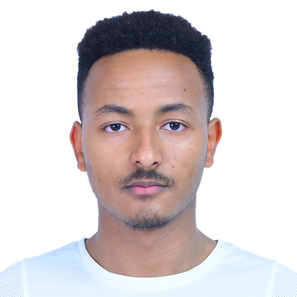

ABOUT ME
Personal Information
- First Name
- Bisrat
- Last Name
- Asaye
- Age
- 21
- Nationality
- Ethiopian
- Languages Spoken
-
- Amharic
- Afan Oromo
- English
- Arabic
- Education
- Currenly attending a BSc of Software Engineering at Addis Ababa Institute of Technology
- Professional Experience
-
- Fashion Modelling
- Website Design
- Web development
- Networking
- Java Programming
- Intermediate level Python Programming
- Current Status
-
Open for work on:
- Website Design
- Web development
- Fashion Modelling and Advertising
- Address
- Addis Ababa, Ethiopia
- Social Media Presence
- Here
Achievements
In the past few months I have two groundbreaking achievements. One is working on an Natural Language Processing based Amharic Spell Checker that will soon be deployed. The other one is joining A2SV which is a great place to aqcuire skills to ace in my career.
Interests and Hobbies
- Watching Movies
- Reading books in Sci-fi, History, Fantasy and Fiction genres
- Competitive Programming
Favorite qoute
The important thing is not to stop questioning. Curiosity has its own reason for existing. One cannot help but be in awe when he contemplates the mysteries of eternity, of life, of the marvelous structure of reality. It is enough if one tries merely to comprehend a little of this mystery each day."~Albert Einstein~
Places I've visited
I've got the chance to visit China, Tianjin state in 2018.Explore a glimpse of the visit through the following video.